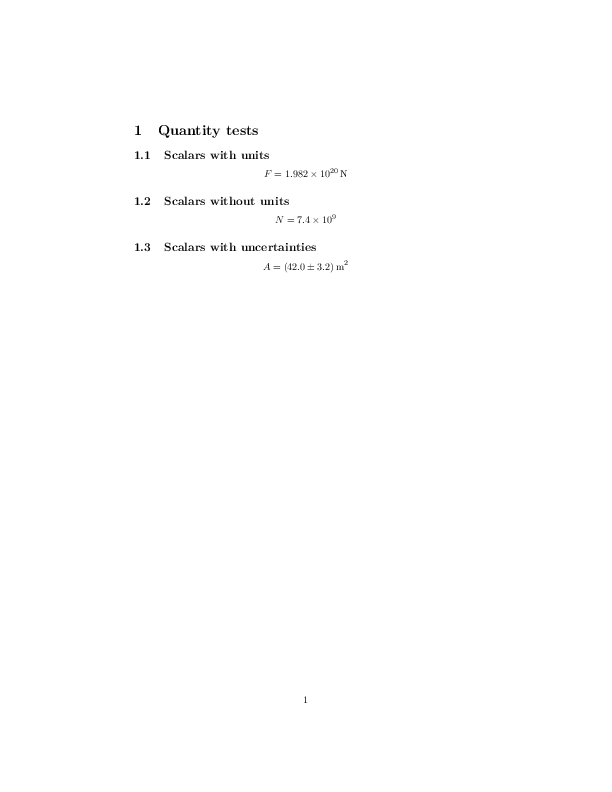

Quantities example¶
This example shows quantities functionality.
The code¶
import quantities as pq
from pylatex import Document, Section, Subsection, Math, Quantity
if __name__ == '__main__':
doc = Document()
section = Section('Quantity tests')
subsection = Subsection('Scalars')
G = pq.constants.Newtonian_constant_of_gravitation
moon_earth_distance = 384400 * pq.km
moon_mass = 7.34767309e22 * pq.kg
earth_mass = 5.972e24 * pq.kg
moon_earth_force = G * moon_mass * earth_mass / moon_earth_distance**2
q1 = Quantity(moon_earth_force.rescale(pq.newton))
math = Math(data=['F=', q1])
subsection.append(math)
section.append(subsection)
doc.append(section)
doc.generate_pdf('quantities_ex')
The generated pdfs¶

quantities_ex.pdf